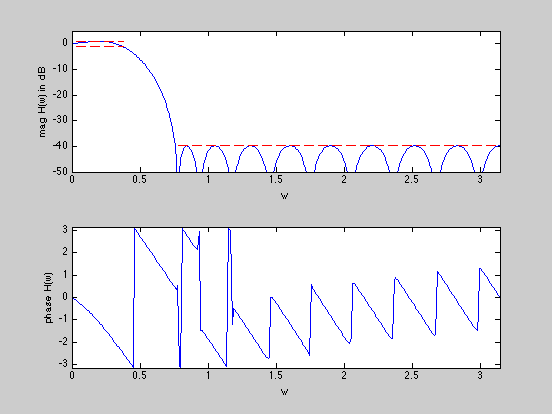

Maximize stopband attenuation of a lowpass FIR filter (magnitude design)
n = 20;
wpass = 0.12*pi;
wstop = 0.24*pi;
delta = 1;
m = 15*n;
w = linspace(0,pi,m)';
A = [ones(m,1) 2*cos(kron(w,[1:n-1]))];
ind = find((0 <= w) & (w <= wpass));
Lp = 10^(-delta/20)*ones(length(ind),1);
Up = 10^(+delta/20)*ones(length(ind),1);
Ap = A(ind,:);
ind = find((wstop <= w) & (w <= pi));
As = A(ind,:);
cvx_begin
variable r(n,1)
minimize( max( abs( As*r ) ) )
subject to
Ap*r >= (Lp.^2);
Ap*r <= (Up.^2);
A*r >= 0;
cvx_end
disp(['Problem is ' cvx_status])
if ~strcmp(cvx_status,'Solved')
return
end
h = spectral_fact(r);
Ustop = 10*log10(cvx_optval);
fprintf(1,'The max attenuation in the stopband is %3.2f dB.\n\n',Ustop);
H = [exp(-j*kron(w,[0:n-1]))]*h;
figure(1)
plot([0:n-1],h','o',[0:n-1],h','b:')
xlabel('t'), ylabel('h(t)')
figure(2)
subplot(2,1,1)
plot(w,20*log10(abs(H)), ...
[0 wpass],[delta delta],'r--', ...
[0 wpass],[-delta -delta],'r--', ...
[wstop pi],[Ustop Ustop],'r--')
xlabel('w')
ylabel('mag H(w) in dB')
axis([0 pi -50 5])
subplot(2,1,2)
plot(w,angle(H))
axis([0,pi,-pi,pi])
xlabel('w'), ylabel('phase H(w)')
Calling SeDuMi: 848 variables (20 free), 827 equality constraints
------------------------------------------------------------------------
SeDuMi 1.1 by AdvOL, 2005 and Jos F. Sturm, 1998, 2001-2003.
Alg = 2: xz-corrector, Adaptive Step-Differentiation, theta = 0.250, beta = 0.500
Split 20 free variables
eqs m = 827, order n = 869, dim = 869, blocks = 1
nnz(A) = 1280 + 24456, nnz(ADA) = 1280, nnz(L) = 1054
Handling 42 + 0 dense columns.
it : b*y gap delta rate t/tP* t/tD* feas cg cg prec
0 : 4.81E-002 0.000
1 : 3.51E+000 1.69E-002 0.000 0.3506 0.9000 0.9000 4.99 1 1 5.7E-001
2 : 1.16E+000 4.88E-003 0.000 0.2894 0.9000 0.9000 2.17 1 1 9.7E-002
3 : 4.21E-001 2.19E-003 0.000 0.4496 0.9000 0.9000 2.41 1 1 2.4E-002
4 : 8.98E-002 1.08E-003 0.000 0.4927 0.9000 0.9000 3.36 1 1 5.9E-003
5 : 3.13E-002 4.79E-004 0.000 0.4436 0.9000 0.9000 1.78 1 1 2.5E-003
6 : 1.18E-002 1.95E-004 0.000 0.4058 0.9000 0.9000 1.31 1 1 1.4E-003
7 : 5.53E-003 9.36E-005 0.000 0.4811 0.9000 0.9000 1.11 1 1 1.1E-003
8 : 2.24E-003 3.48E-005 0.000 0.3721 0.9000 0.9000 1.06 1 1 2.0E-003
9 : 1.07E-003 1.54E-005 0.000 0.4417 0.9000 0.9000 1.02 1 1 2.1E-003
10 : 2.95E-004 5.04E-007 0.000 0.0327 0.9000 0.8329 0.98 1 1 1.4E-005
11 : 1.81E-004 2.83E-007 0.000 0.5627 0.9000 0.5289 1.00 1 1 8.1E-006
12 : 1.42E-004 1.80E-007 0.000 0.6365 0.9000 0.9000 1.00 1 1 5.2E-006
13 : 1.26E-004 7.20E-008 0.000 0.3990 0.9210 0.9000 0.99 1 1 2.3E-006
14 : 1.19E-004 3.12E-008 0.000 0.4334 0.9493 0.9000 0.94 1 1 1.2E-006
15 : 1.10E-004 1.42E-008 0.000 0.4563 0.9000 0.9239 0.93 1 2 5.0E-007
16 : 1.06E-004 3.48E-009 0.000 0.2444 0.9000 0.9096 0.97 2 2 1.1E-007
17 : 1.05E-004 8.13E-010 0.000 0.2336 0.9000 0.8860 0.99 2 2 2.2E-008
18 : 1.05E-004 2.23E-011 0.000 0.0275 0.9902 0.9900 1.00 2 2
iter seconds digits c*x b*y
18 3.4 Inf 1.0483675450e-004 1.0483675450e-004
|Ax-b| = 5.2e-010, [Ay-c]_+ = 1.7E-015, |x|= 7.4e+000, |y|= 7.2e-001
Detailed timing (sec)
Pre IPM Post
1.402E-001 3.425E+000 1.001E-002
Max-norms: ||b||=1.258925e+000, ||c|| = 1,
Cholesky |add|=0, |skip| = 1, ||L.L|| = 1.
------------------------------------------------------------------------
Status (cvx_status): Solved
Optimal value (cvx_optval): 0.000104837
Problem is Solved
The max attenuation in the stopband is -39.79 dB.

